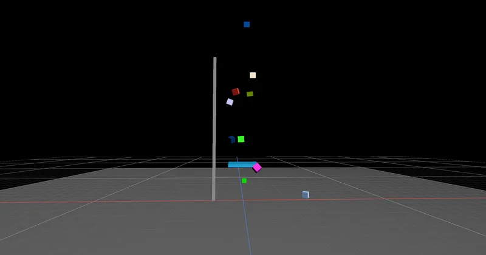

Physics Joints & Constraints
Prismatic Joints & Sliders - RedGPU WebGPU Example
Simulates linear sliding mechanisms and elevators using Prismatic Joints.
직선 왕복 관절(Prismatic Joint)로 슬라이더 및 승강기 운동을 구현합니다.

Physics Joints & Constraints
Simulates linear sliding mechanisms and elevators using Prismatic Joints.
직선 왕복 관절(Prismatic Joint)로 슬라이더 및 승강기 운동을 구현합니다.
